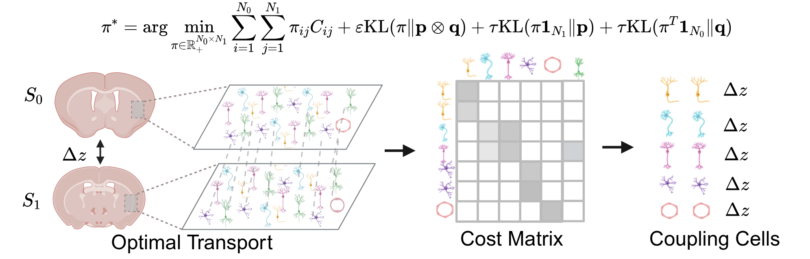
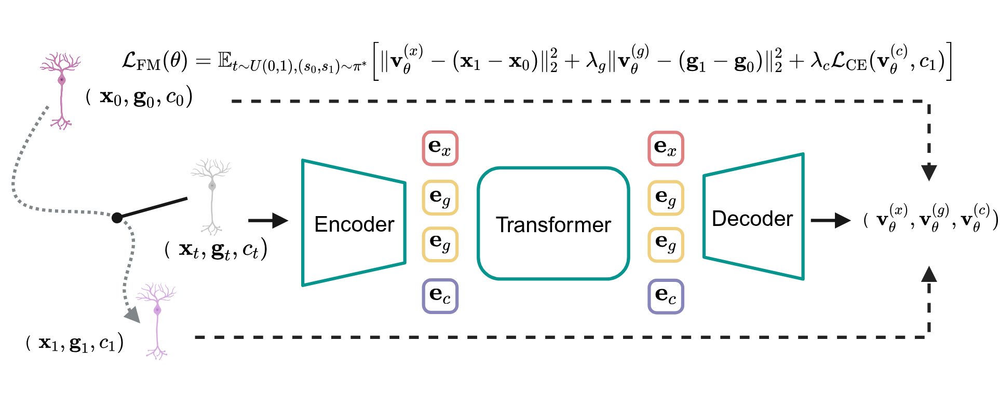
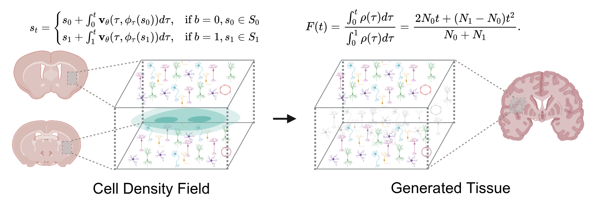
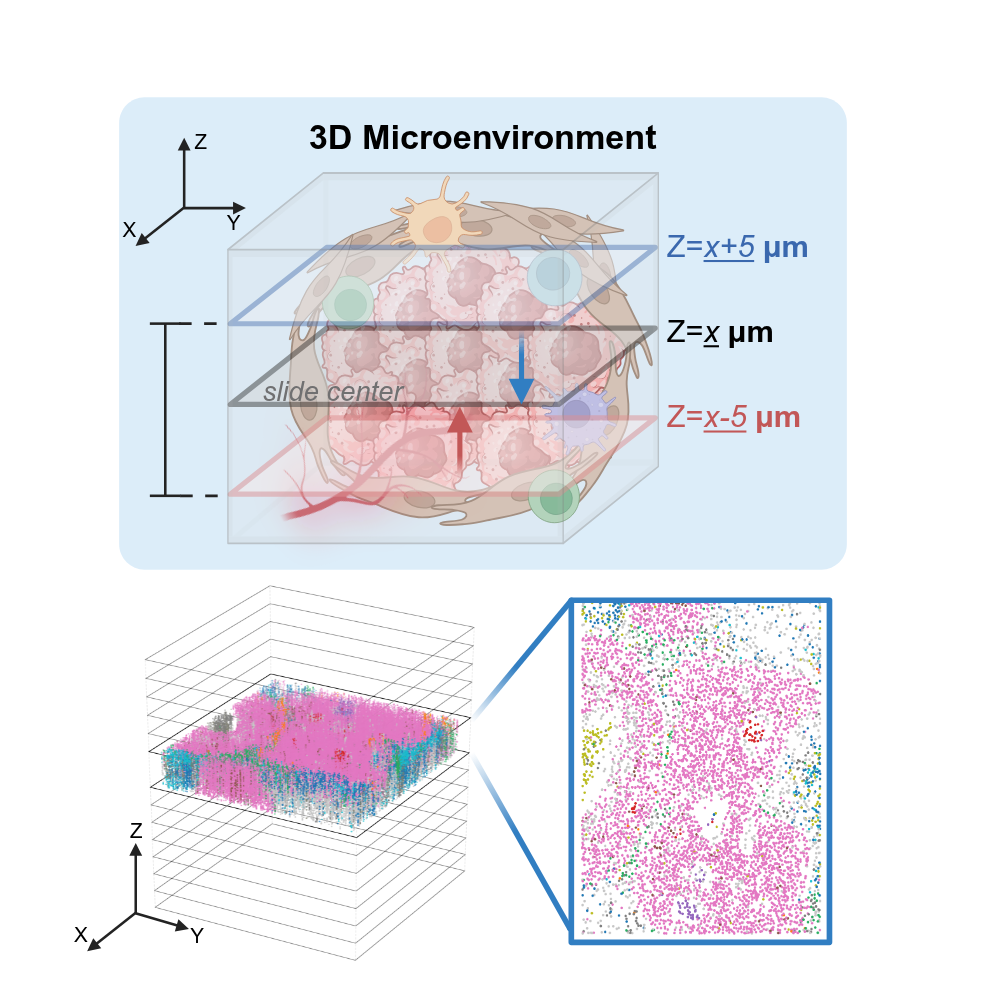
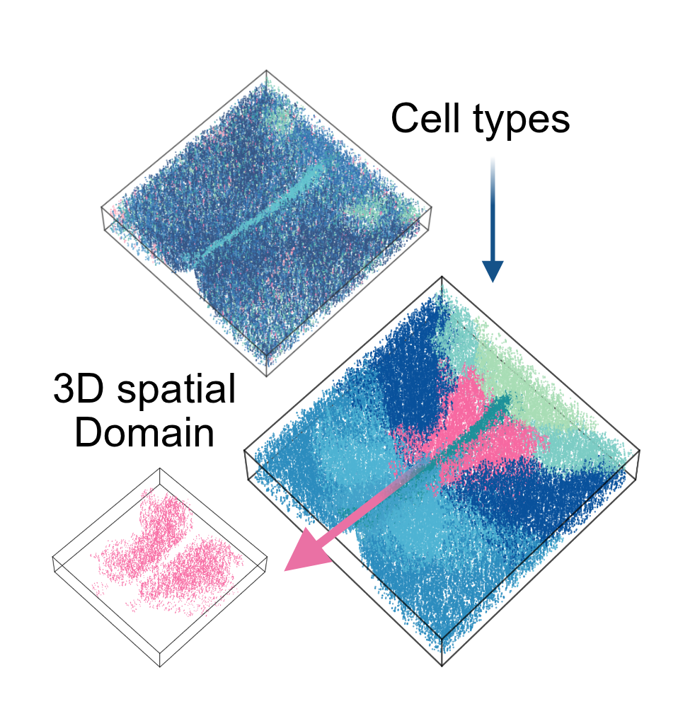
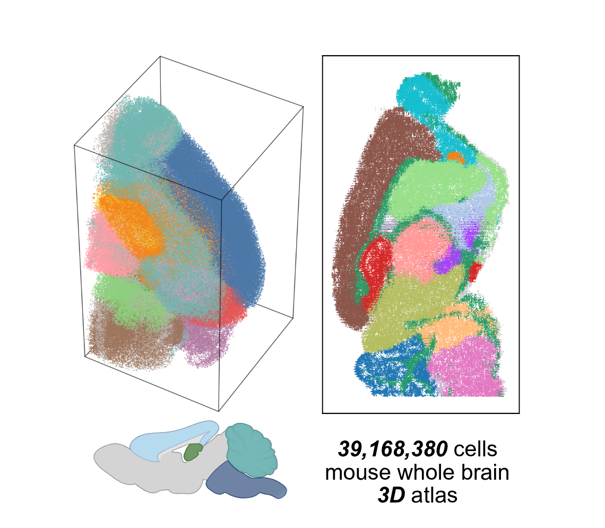
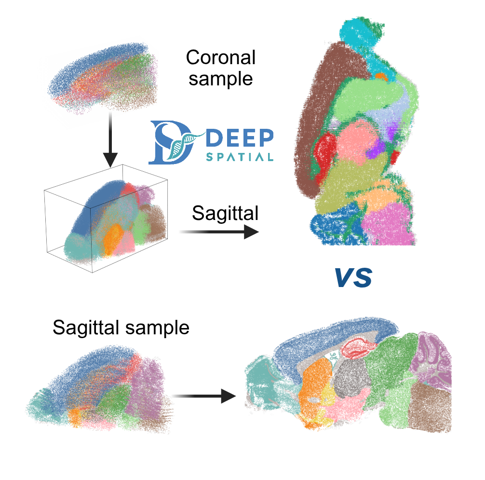

Capturing the 3D organization of cells is essential for deciphering complex biological processes, yet severely hindered by the destructive nature of physical sectioning. DeepSpatial is a generative framework driven by Optimal Transport Flow Matching that learns a continuous dynamic vector field — enabling the direct extraction of uninterrupted, infinitely resolvable tissue states at any arbitrary spatial depth.
DeepSpatial reframes 3D reconstruction as a continuous probability density evolution. Rather than merely inserting pseudo-2D planes, it models the multi-modal transitions between physical slices as mixed continuous-discrete dynamics via a scalable Transformer architecture.



Explore the reconstructed MERFISH mouse hypothalamus volume. Rotate, zoom and filter across annotated cell types — each point represents a single cell in its true 3D spatial context.
By providing an infinitely resolvable 3D virtual tissue, DeepSpatial catalyzes the shift from traditional planar analyses to true volumetric quantification — enabling 3D cell-cell communication mapping, spatial domain identification, and whole-organ atlas construction.

Generate virtual tissue slides at arbitrary Z-depths, revealing continuous 3D microenvironments destroyed by physical sectioning.

Apply CellCharter or similar methods to delineate continuous 3D spatial domains and architectures across the reconstructed volume.

Scalable reconstruction of a 39.2M-cell mouse whole-brain spatial atlas from 129 CCF-aligned sections.

Computationally slice the volume along coronal or sagittal planes for cross-platform comparison and topological analysis.
DeepSpatial is built on AnnData and fully compatible with the Scanpy ecosystem. GPU-accelerated PyTorch implementation enables efficient 3D manifold recovery of large-scale spatial datasets.
Step-by-step guides for MERFISH Mouse Hypothalamus, Human Breast Cancer IMC, and Deep-STARmap validation — plus full API documentation.
Read the DocsIf DeepSpatial is useful in your research, please cite our paper.